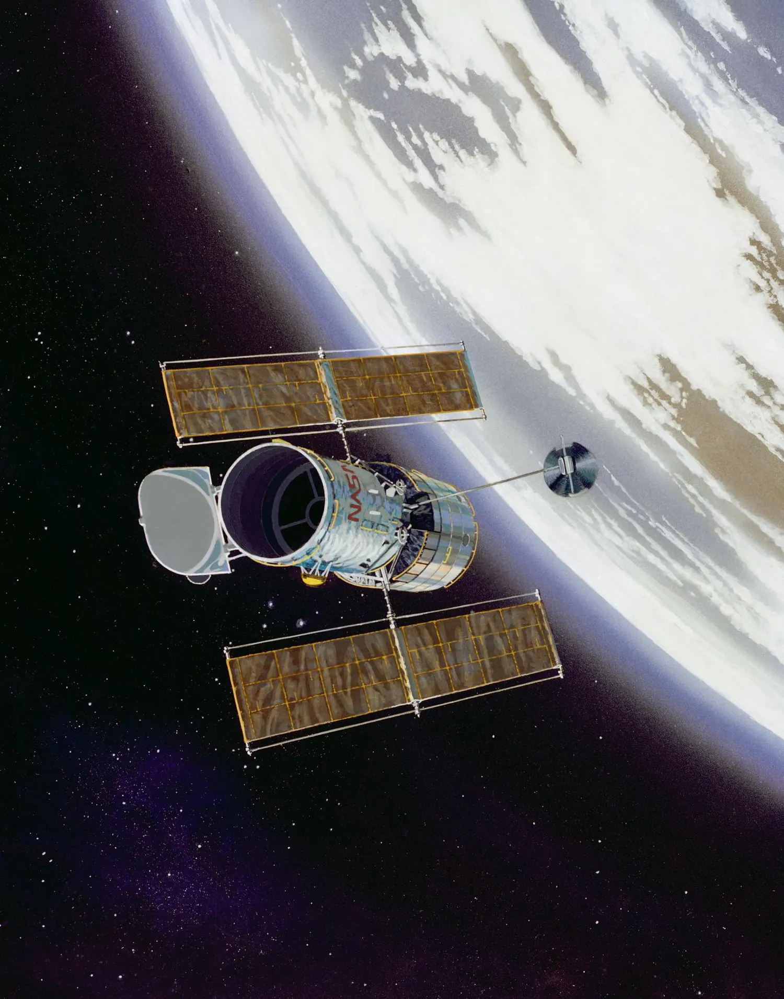
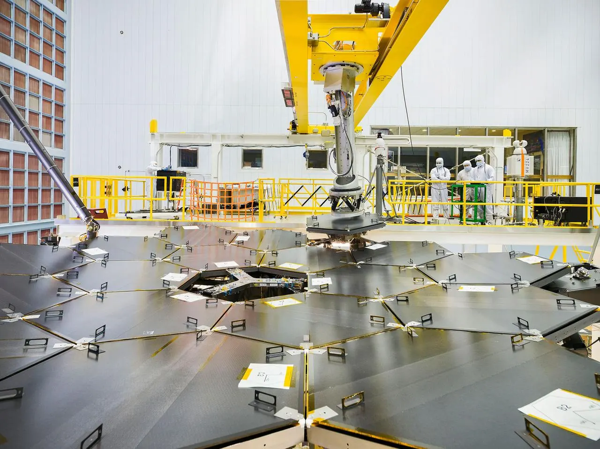
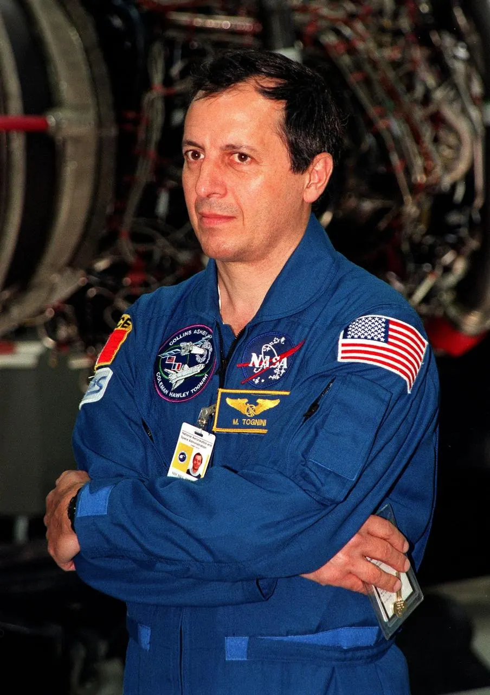
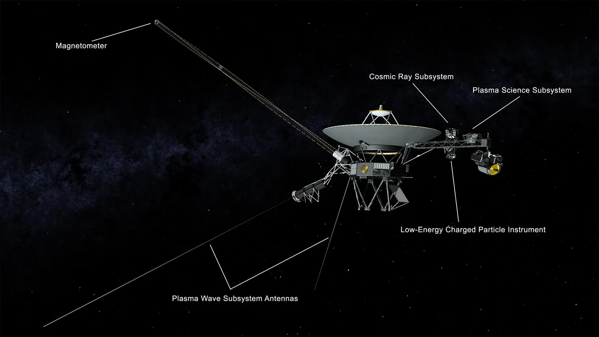
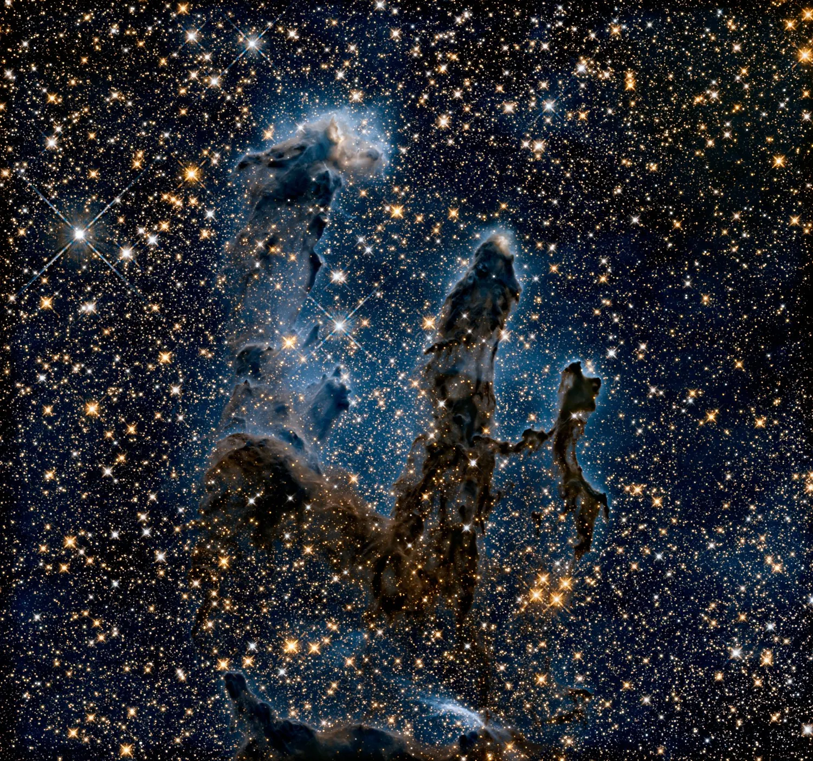
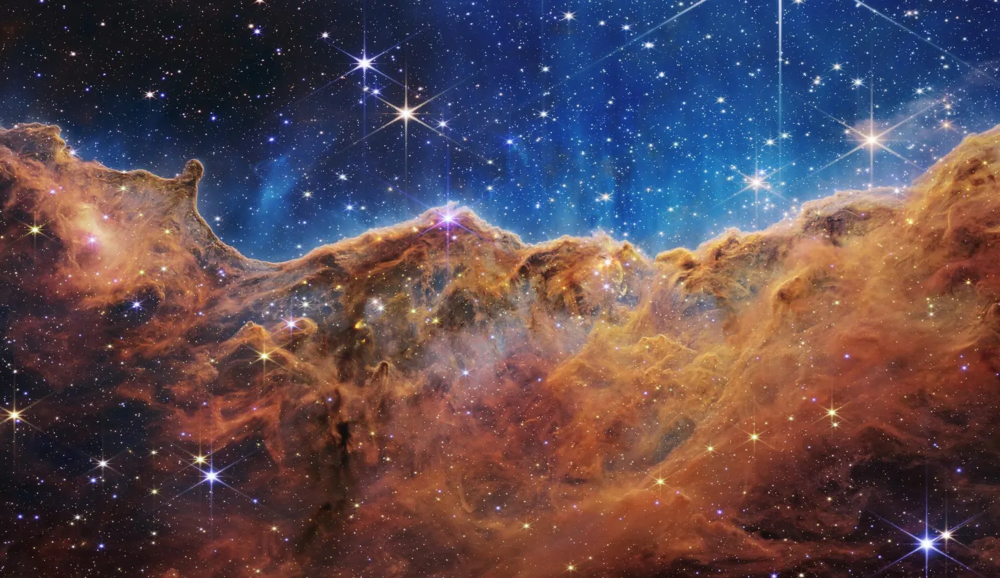
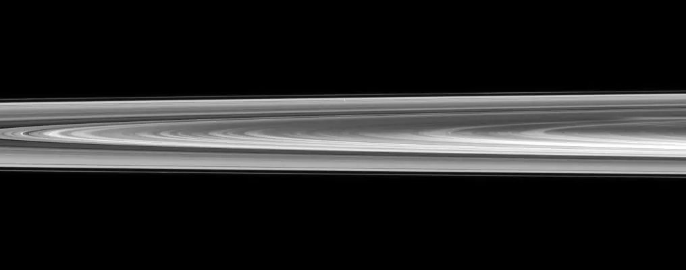

Every figure on this site — every temperature, every moon count, every ring — came from a
specific piece of hardware built by people, launched on a rocket, and operated for
decades. These are those machines, and the images they sent back.
Telescopes in space
Putting a telescope in orbit buys two things: no atmosphere blurring the view, and
access to wavelengths — infrared, ultraviolet, X-ray — that the air simply absorbs
before they reach the ground.
Hubble Space Telescope
OperatingVisible / UV / near-IR
Launched by Shuttle Discovery in April 1990 and immediately found to have a
mirror ground wrong by less than a fiftieth the width of a human hair — enough to
ruin every image. A 1993 servicing mission fitted corrective optics, and Hubble
went on to become the most productive telescope ever built.
Launched24 April 1990
Primary mirror2.4 m
Mass at launch11,110 kg
Orbit~600 km, low Earth orbit
Observationsover 1.5 million

An artist's concept, not a photograph. Hubble has been observing since 1990.
NASA / JSC
James Webb Space Telescope
OperatingInfrared
Too big to launch assembled, Webb flew folded and unpacked itself over weeks —
eighteen gold-coated beryllium hexagons and a five-layer sunshield, with hundreds of
single-point failures and no possibility of repair. It sits at the Sun–Earth L2
point, 1.5 million km out, chilled to around 40 K so its own heat does not drown the
infrared light it came to collect.
Launched25 December 2021
Primary mirror6.5 m, 18 segments
Mass~6,200 kg
LocationSun–Earth L2, 1.5 M km
Operating temp.~40 K (−233 °C)

Webb's primary mirror, fully assembled before launch.
NASA / GSFC
Chandra X-ray Observatory
OperatingX-ray
X-rays cannot be focused by ordinary lenses or mirrors, so Chandra uses nested
cylindrical mirrors that graze the incoming light into focus. It sees only the
violent universe: matter falling into black holes, supernova remnants, and the
hundred-million-degree gas that fills galaxy clusters. Its observations of the
Bullet Cluster provided some of the most direct evidence that dark matter exists.
Launched23 July 1999
Length13.8 m
Mass4,800 kg
Resolution~0.5 arcseconds
Orbit apogee~139,000 km

Photographed at Kennedy Space Center, 1999.
NASA / KSC
Spitzer Space Telescope
Retired 2020Infrared
A modest 0.85 m infrared telescope designed for two and a half years, which ran for
sixteen. Spitzer pioneered the technique of measuring an exoplanet's
atmosphere as it passes in front of its star, and quietly found an enormous, faint
outer ring around Saturn that nobody had noticed in four centuries of looking. It was
switched off on 30 January 2020; its data archive is still producing results.
Operated2003 – 2020
Primary mirror0.85 m
Wavelengths3.6 – 160 µm
Design life2.5 years
Spacecraft that went there
Parker Solar Probe
OperatingSolar corona
The fastest object humans have ever built, and the closest anything of ours has come
to a star. A 4.24 m carbon-composite heat shield takes the full force of the Sun at
around 1,400 K while the instruments behind it sit near room temperature. It is
flying through the corona to find out why the Sun's outer atmosphere is
hundreds of times hotter than its surface.
Launched12 August 2018
Closest approach6.1 million km
Top speed~192 km/s
Shield front face~1,400 K
Dry mass~559 kg
Arriving at Kennedy Space Center for launch processing.
NASA / Ben Smegelsky
Voyager 1 & 2
OperatingInterstellar
Built with 1970s electronics and still returning data from beyond the Sun's
influence. Between them they gave us our only close looks at Uranus and Neptune,
discovered volcanoes on Io and the smooth ice shell of Europa, and are now measuring
the interstellar medium directly. Their plutonium is running out; instruments are
being retired one at a time to keep the rest alive.
Launched1977, 16 days apart
Power at launch~470 W
Power now~220 W
Left the heliosphere2012 · 2018
Golden Record116 images, 55 languages

Voyager 2's instrument layout.
NASA / JPL-Caltech
Cassini–Huygens
Ended 2017Saturn orbiter
Thirteen years in orbit around Saturn and 294 circuits of the
planet. Its radar found seas of liquid methane on Titan; ESA's Huygens probe landed
there in January 2005, the only landing ever made in the outer Solar System. It also
caught Enceladus venting water ice from a hidden ocean — which is why, when the fuel
ran out, Cassini was deliberately flown into Saturn on 15 September 2017 rather than
risk contaminating a moon that might host life.
Launched15 October 1997
In Saturn orbitJuly 2004 – Sept 2017
Orbits of Saturn294
Huygens probe mass~320 kg
Galileo
Ended 2003Jupiter orbiter
The first spacecraft to orbit a gas giant, and the only one to drop a probe into
Jupiter's atmosphere. Its magnetometer readings at Europa are the strongest evidence
that a salty ocean lies beneath the ice — a finding so significant that Galileo was
sent into Jupiter on 21 September 2003 to guarantee it could never crash into Europa
carrying terrestrial microbes.
Launched18 October 1989
In Jupiter orbitDec 1995 – Sept 2003
Dry mass~2,223 kg
And the ones still on the ground
Space is not always the answer. In the Atacama Desert, the
Very Large Telescope runs four 8.2 m mirrors at 2,635 m altitude, each
flexed by around 150 actuators to cancel out atmospheric distortion in real time — and
able to combine into a single interferometer. Higher up at 5,000 m,
ALMA operates 66 movable dishes as one radio instrument, spread from
150 m to 16 km apart. ALMA's images of gaps and rings in protoplanetary discs are the
closest thing we have to watching planets being born.
What they showed us
The same object, observed with different hardware, is a different object. Hubble sees
dust as opaque; Webb sees straight through it to the stars forming inside. Neither
picture is more real than the other.

Hubble, visible light. The Pillars of Creation in the Eagle Nebula,
first imaged in 1995 and revisited in high definition in 2015. The pillars are opaque
towers of dust light-years tall.
NASA / GSFC

Webb, infrared. The Cosmic Cliffs in the Carina Nebula. At these
wavelengths the dust turns translucent and hundreds of young stars appear that are
invisible to Hubble.
NASA / ESA / CSA / STScI

Cassini, from inside the system. Saturn's rings viewed from a vantage
point no Earth-based telescope can reach.
NASA / JPL / Space Science Institute
Why this page matters
None of the data on this site is obvious or self-evident. Someone had to build a
machine, launch it, keep it alive for years, and interpret what came back. The numbers
are real because the hardware was.